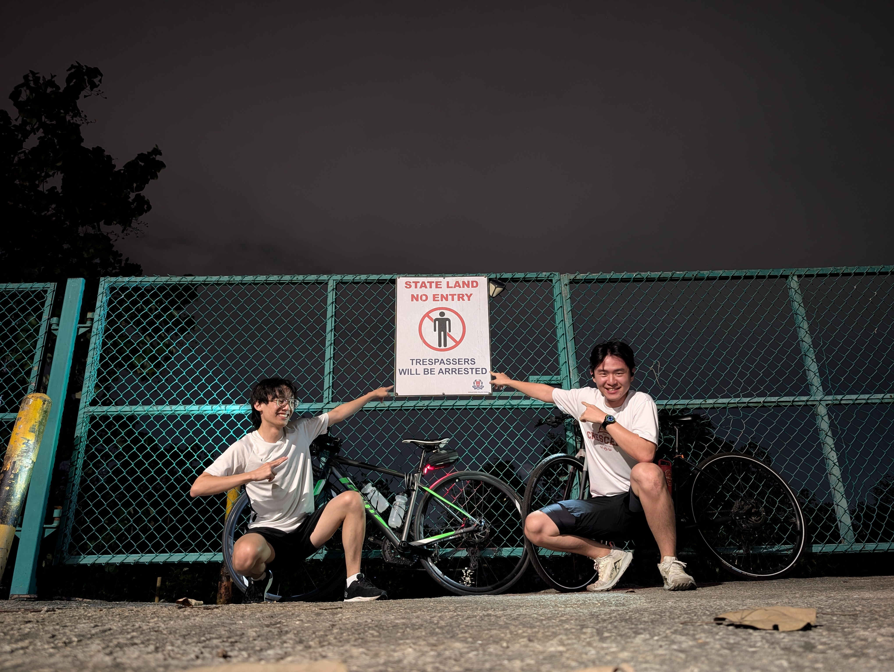
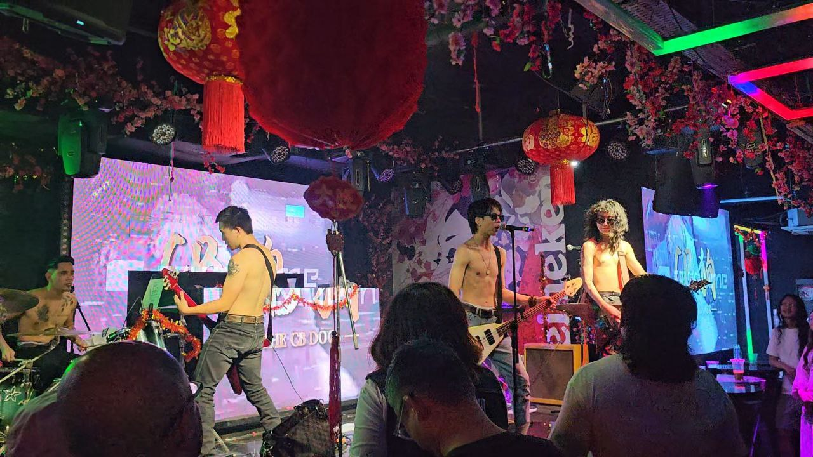
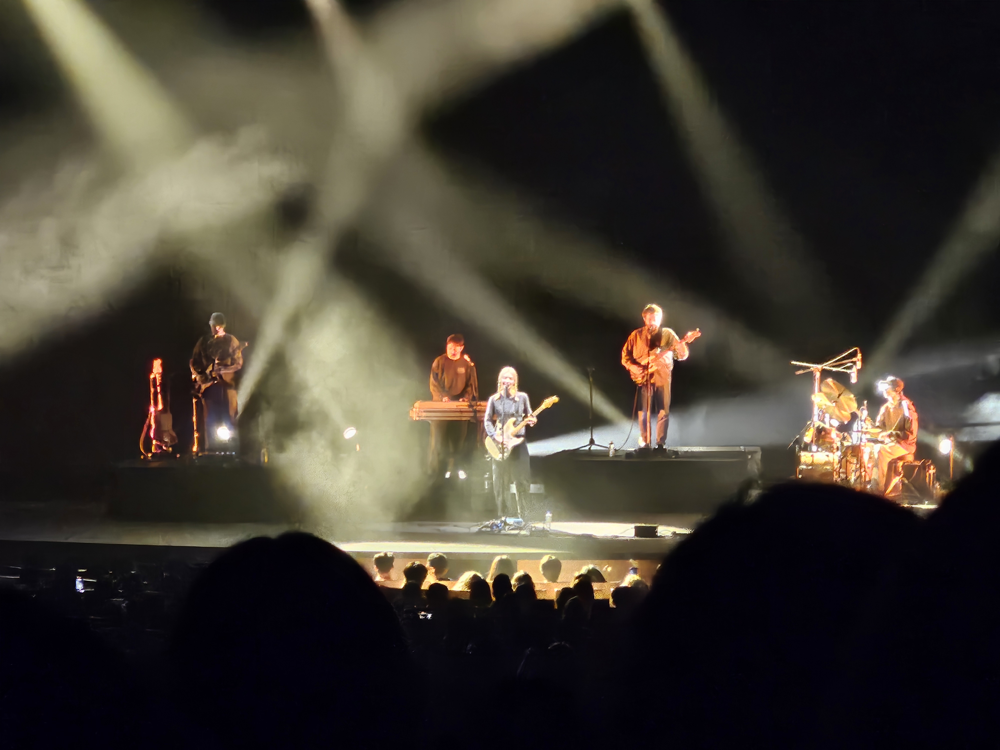
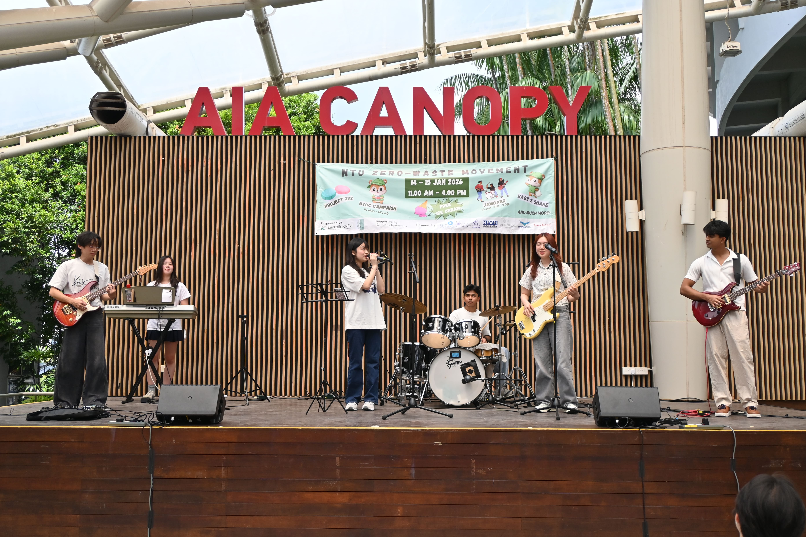
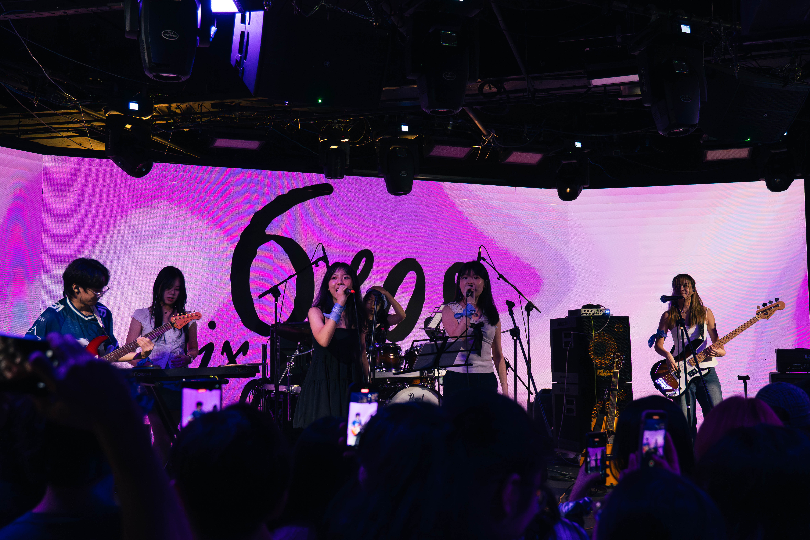

Night rides 🚲ᯓ⋆.ೃ
We made it to the end of Lim Chu Kang Road at record time. I think we averaged >24km/h for the entire journey there and back? But honestly just having someone else to cycle with is just so fun! More to come soon!
12th Feb 26
Watched the CB Dogs LIVE ᶠᶸᶜᵏᵧₒᵤ!
I feel like their mood wasn't exactly the best coming into this concert so it wasn't exactly the best first rock concert experience imo. A very very different vibe compared to what I'm used to.
Nonetheless they gave a solid performance which I really enjoyed. Midway through their set they played so damn hard they tripped the power HAHAHAH. Took about 10 minutes to get everything back to normal, and they did a really good job distracting the crowd while they fixed their back end issues. Hella novel experience imo, there's quite a bit to learn from how they were able to do that.
One thing I'll note in the future is just - maybe don't go to performances held in clubs? As much as I loved the atmosphere and the vibe everyone brought, the smoke was wayyy too unbearable. I was left coughing for the rest of the night after breathing in a lifetime's worth of secondhand smoke, and it took even longer to get the smell of cigarettes out of my clothes.
I did leave with a CB dogs shirt tho :D
Overall, great experience, but doubt I'd do it again.
7th Feb 26
Valentine's Performance (˶˃ ᵕ ˂˶) .ᐟ.ᐟ

Oh my god I was sooooo sick the day of and the day before this performance. I think I came down with food poisoning because I was literally projectile vomitting. But I managed to lock in and play pretty well in the end!
I think my favourite song from this set for me would be Comfortably Numb by Pink Floyd and my second favourite would be Is this love by Whitesnake. Really learnt a lot through playing those songs and they just sound so majestic.
I really love playing with these guys in particular too! Pure vibes during practice sessions and the energy's always super high so I'm hella motivated during prac hehehe.
4th Feb 26
Watched Men I Trust LIVEEEEEEE ‧₊˚♪ 𝄞₊˚⊹
This was my first concert in 3 years, the last one being Babymetal's at Madrid! I really missed being able to feel the atmosphere, it's just so energising! There was another band called Vegtable opening for them.
Also not the way me and my friends were under the impression that they were Men I Trust T.T HAHAHAHAH. Took us till Men I Trust started their first song that it really hit us. Felt pretty dumb afterwards hahahah.
Ever since this concert I've been listening to them on repeat! I really like "Oncle Jazz" and "Equus Caballus" (the album they performed) the most!
26th Jan 26
First Performance of the year! ৻( •̀ ᗜ •́ ৻)
Pretty chill performance this time round. Very fun!
14th Jan 26
Taiwan's hella cool ദ്ദി(˵ •̀ ᴗ - ˵ ) ✧
Starting my 2026 the right way!
31st Dec 25 - 5th Jan 26
I LOVE MY BAND ✧｡٩(ˊᗜˋ )و✧*｡
My first ever performance at an external performance venue LET'S GOOOOOOOOOOOO. I made a few mistakes here and there but WHATEVER I PERFORMED WELL YIPPEEEE ++++ My bandmates are all so fucking cool 100000/10!!!
10/10 HELLA FUN I HOPE THERE'S GONNA BE MORE TO COME SOMETIME IN MY LIFE!
24th Oct 25
I joined a cycling club! ( ദ്ദി ˙ᗜ˙ )
I wanted to try something new. Years ago, my friend introduced me to this app called meetup.com, where you can find and meet people who share the same hobbies as you do. I never really did anything about it because the idea of meeting complete strangers and spending time with them seemed kinda scary, especially considering the fact that they would most likely be out of the age range of people I was used to talking to.
But well, I finally had the motivation to sign up for an event last week, and so that's what I did.
I went in there with 0 clue of what to expect. How was this event run? How serious were the people there?
Even on the morning itself, when I woke up at 630am to prepare to leave the house, I was pretty hesistant about whether to go or not, and lowkey was trying to find as many excuses as possible to not go.
Eventually, I realised, whatever man, I want some real change in my life, and by going to this event I signed up for, it shows myself that I'm serious about making changes in my own life. Especially the waking up before noon part.
So there I was, pulled up to the group of people at the meeting point and talked to the first person I saw there. They were very friendly, so honestly I think that's how I knew this was the right place. They too were attending this for the first time, and had no idea what to expect either.
But they key difference to me was the fact that everyone was here for fun. No sense of obligations or whatnot. Just fun.
There was a brief round of introductions and a short briefing of what to expect, and then we headed off to Cosford Container Park.
Had a nice breakfast with a good view, and afterwards started talking with the clubs regulars. I remember nothing of the conversations we had (Which honestly is a good thing!), but I do know that it was a breath of fresh air, and really just reminded me of how unserious life actually is.
That, and getting reminded of the fact that I am still really really young in the grand scheme of things.
After we all had our breakfast, we headed back to the starting point, with a couple breaks to take photos as a group against nice backdrops.
Furthermore, the thing I was most intrigued by was the fact that everyone didn't just leave the second we got back, which I expected, but hung around to have a drink and continue to chat. I think that was vibe which really cemented my decision to continue attending more of such rides with these people.
I do want to continue making friends and get to know more people who do value these kinds of interactions.
Here's the view from Cosford Container Park.

18th Oct 25
I LEARNT HOW TO WAVEBOARD ₍₍⚞(˶>ᗜ<˶)⚟⁾⁾
I'm going to a ski resort for the first (proper) time in my life. Like an actual stay there instead of just a day trip to just check it out. So, this meant that I now had a choice in what skill I'd like to pick up. Will it be skiing? Or snowboarding? And something in my mind just told me, hell yeah man lets snowboard. It looked so cool man I really wanted to try it.
So I went to ask my friends who snowboarded what their experience was like and how did they picked it up. One of them told me: You should try a ripstick, the fundamental skills are quite similar to snowboarding. Immediately I went online to check out the prices of them. A mere 15 dollars got me one of them.
(I proceeded to forget about it for awhile but thankfully they reminded me about it)
As soon as I got that message, I went, yeap, I'll commit to learning this new skill, and then I went ahead and bought it immediately.
Today rolled around and the waveboard is finally in my house. First thing I woke up I immediately went to the common corridor to try it out and see whether I could balance on it. Keep in mind this is only the second time in my life that I've stepped on any sort of board at all. Completely unfamiliar territory here. I'm always on my bike instead of this. Watched a grand total of one video the night before to prepare myself for this experience LOLL
The first half an hour was HARD. I stood next to the walls and learnt how to get up onto the board without falling. Left leg to the right side of the front wheel, stabilised it, and use my right left to leap onto the board. Took quite a few attempts before I even managed to get on properly, and the board was making such loud sound everytime I fell off I kinda felt sorry for my neighbours who might've been trying to rest at 10am on a Sunday. Oops.
But okay, after awhile, I did get the hang of it and where to put my foot in order to get the best stability and control. I could move really really slowly. (My fingerprints now cover the walls because my lord are they dirty)
Had a quick lunch and figured that I was ready for the proper thing now. Went down to the basketball court to get more space to practice, and thankfully there wasn't anyone around at all so I had the whole place to myself :D
And one thing I immediately noticed was the fact that the basketball court wasn't flat at all but raised at the center. So for a beginner like me it was so confusing as to why I kept stopping when travelling in certain directions as opposed to it being so easy coming back until I realised that fact.
But yeah I kept practicing until it got much more natural and I was able to actually exert enough force onto the board so I could go up that slight incline to finally make my first trip down the length of the basketball court. So pumped when I finally did that.
Continued practicng over and over again till it got more natural and I was finally able to make an entire loop around the court oml I was so damn PROUD of myself for doing it it was insane I loved every single bit of it.
Thankfully, turning and balancing felt pretty natural to me the entire time (thanks past me for practicing cycling with no hands). The front part of the waveboard basically did the turning, the rear did the propulsion. Pretty simple system actually, much better than I initially feared.
So yeah! This is what I've managed to do and man am I proud of myself for picking up a new skill. It's truly been awhile since I've done something new and man I want to do more stuff from now on.
Anyways, here's a video of me :D
12th Oct 25
Aircon Woes (˚ ˃̣̣̥⌓˂̣̣̥ )
If I had a dollar for everytime I took apart an aircon, I'd have two, which isnt much, but its weird that it happened twice.
So yeah school has once again started and the first thing I'm hit with is a terrible sore throat which then developed into a full blown cough. So I thought, huh, thats really unlucky that everytime I'm back in hall I'm always hit with a really bad flu. Because when I thought back to it I ended up with the flu so many times over the course of the previous year. So I'm just thinking, Oh! Maybe its just me being really unlucky and so I think nothing about it.
And so the weekend goes by, I get home and my flu gets noticeably better. I feel great by the time Sunday rolls about and I go back to my dorm and head to bed thinking about what a great week this week's gonna be.
BOOM I wake up with the worst cough+sore throat combination I've felt in awhile, and a bit of a fever to go with it. And I'm just thinking: Just what is it that's causing me to be so sick?
Then it hits me - I haven't cleaned the portable aircon ONCE since getting it and there's probably a ton of mould in there.
AND YES THERE REALLY WAS A LOT OF MOULD I SPENT THE BETTER HALF OF AN ENTIRE DAY TAKING APART THE AIRCON AND PAINSTAKINGLY CLEANING IT BIT BY BIT OH MY LORD IT WASN'T EVEN A LAYER OF MOULD IT WAS A FULL ON BROWNIE OF MOULD IN THERE NO WONDER WHY I KEPT FALLING SICKKKK
But well that's that I now have a spanking clean aircon which should hopefully be much more colder than it already was. (I also have two screws which I couldn't find the hole they belonged so oh well)
And so for the rest of the month I suppose I'm gonna be testing my hypothesis of whether my aircon really was the problem (I really hope it was because I coughed so much my lungs have started to hurt ughhhh)
Anyway for the uninitiated heres how an aircon looks when you tear it apart.

11th Aug 25
Cat Cafe!! ≽^•⩊•^≼
So recently I went to a cat cafe called Catonomy in Penang and met the most friendly cats I've seen in awhile they were legit sooooo charming. It was located around a 10 minutes walk from my accomodation in Georgetown, so I think it was pretty convenient to get to! This was my second time visiting a cat cafe so I was wondering how it'd go this time, because the last time I went to one the cafe was so small and the cats were all so stressed that they were completely disinterested in interacting with humans which was quite disappointing to see D:
So when I stepped into the cafe I was happy to see that it took up the entirety of a shophouse and was really big, with a 2nd floor for the cats to go to when (presumably) they were done for the day. The cats were all very friendly and used to humans so it was really nice. Plus, the entry fee was buying a meal/drink from them, and I ordered the Kaarage Don from them at only ~RM20 which was such a steal! It was hella fun, 10/10 would go again if I ever were to go back to Penang.
Notable cats: Super affectionate Ragdoll (no vid cuz it left to go upstairs), 2 young Tuxedoes (pickupable), and Boba Eyes
Cat Tax:
4th - 7th Aug (@Penang)
The Boys Head to Gunung Lambak
This Summer, the boys and I headed over to the city of Kluang to scale a 500m tall hill. Here's how it went.
5th July 25